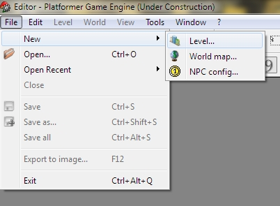
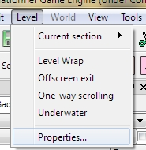
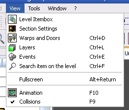
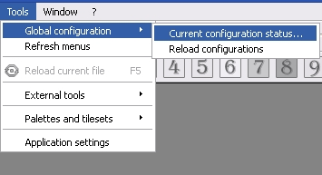

Create a new file.
Open file
Save current data into opened file. If file is created, will be asked for save file.
This option will save current level section, or world map into image file (will be saved in PNG format).
Undo - Cancel recent action.
Redo - Repeat canceled action.
Copy - Selected items will be stored in special buffer. Data can be pasted in other file.
Cut - Selected itemss will be stored in special buffer and deleted from working space.
Paste - Switch editing mode to "Paste". Cursor will be changed and you must select point of working space, for paste items from buffer.

In this menu you can switch current section to other.
Connect left and right sides (Level Warp) - Moved out off screen items/characters will be entered from opposite side of section.
Offscreen exit - Allows to player exit from level by go out off screen.
One-way scrolling (No turn back) - Character can move only from left to right.
Underwater - Force underwater physics to full section area.
Here you can set the level title, what will be displayed on trying of level debug.
Disable world map - Enable the hub based episode mode. The world map will not be used.
Restart level after fail - Last level will be restarter after player's fail instead it will be kicked into world map or into last hub.
Properties - show/hide the world map properties toolbox.

Here you can show or hide exists toolboxes
Enabling displaying of main window in fullscreen mode. This feature is useful for tablets.
Enable or disable item animations. This option will not be work, if on level map placed too many items.
You can disable this option for speed up.
Enable or disable collision detection on drop items. If collision was cased, moved item will return back to source position. For example: blocks can't be placed over other blocks, or NPCs can't be placed to other NPCs or over blocks, and BGO can't be palced over equal BGO, but difference BGO can be placed over.
You will take speed up, if you disable this option. Also you can disable this option for place items without limits.

This option displaying the global configuration status window. You will see list of all loaded items and you can see all errors, what appeared in config loading process, what will help for find error in game config files.
Reloading of global configuration
This option start to completely reload of all global configuration data without restart of editor.
This option will reset menubar options. This option will help, if toolbars inactive.
Current file will be reloaded with his data, as custom grahics.
Contains the GUIs and links to additional tools.
Create and edit the global tilesets configuration for current game config.
This action will be open the application settings
window, where you can change animation item limits, set autoplay music, etc.
Here you can define logging properties, set log file or disable logging.
Here displaying all opened documents. You can switch to any, you can arrage the, or close.
This menu contains the links to help information and links to special tools.
This is a special tool which displaying everything information which appearing while editor process is going.
Also this console allow to send special commands to the engine part while debug test is runned.
Copyright © 2014 Platformer Game Engine by Wohlstand project. All rights reserved.